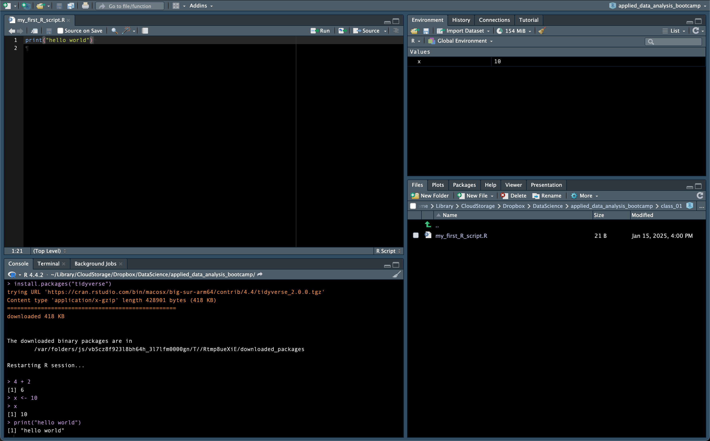

Before our first class meeting, you’ll need to install some software and familiarize yourself with a few basic concepts. This preparation will ensure you can participate fully in class activities. While the steps are straightforward, please allow 45-60 minutes to complete everything comfortably.
1.1 Learning Objectives
By completing this pre-class work, you will be able to:
Install R and RStudio on your computer
Explain the difference between R and RStudio
Perform basic calculations in R
Create simple variables
Use basic R functions
Use AI tools to help understand R code
1.2 What is R?
Think of R as two things working together: a powerful calculator designed specifically for data analysis, and a collection of tools that make that calculator more useful. R was created by statisticians in the 1990s to make data analysis more accessible and reproducible. Today, it’s one of the most popular tools for data analysis worldwide. It is free and open source.
1.3 What is RStudio?
RStudio is like a workshop for R – it’s where you’ll actually do your work. If R is a powerful calculator, RStudio is the desk, notepad, file organizer, and reference library that makes using that calculator much easier. It’s called an IDE (Integrated Development Environment), but you can think of it as your data analysis workspace.
1.4 What are R Packages?
Packages in R are like apps on your phone:
Your phone comes with some basic apps (like R’s built-in functions)
You can install new apps (packages) to do specific tasks
Once installed, you need to open (load) an app to use it
1.5 What is the tidyverse?
The tidyverse is like a bundle of the most useful data analysis apps, all designed to work together seamlessly. It includes tools for:
Creating beautiful visualizations
Cleaning and organizing data
Importing data from various sources
These tools are designed to be more intuitive and user-friendly than base R.
This will walk you through each step with detailed instructions
Includes screenshots and troubleshooting tips
Ask a friendly LLM
Use ChatGPT or Claude
Try questions like: “I’m having trouble installing R on [your OS]. Here’s what I’ve tried…”
The LLM can provide customized help for your specific situation
1.6.4 Verify Your Installation
After installing both R and RStudio:
Open RStudio (not R)
Type 2 + 2 in the Console (bottom left)
Press Enter
If you see [1] 4, you’re ready to go!
If not, ask your favorite LLM. Describe what your issue. Upload a screenshot if you are unsure.
1.7 The RStudio Interface

R Studio
When you first open RStudio, you’ll likely see three panels. To see all four panels, click the “New File” icon in the top left corner and select “R Script”. Here’s what each panel does:
Source Editor (top left): This is where you write and edit your R code files
Like a text editor for your R scripts
Where you’ll write code you want to save and reuse
Console (bottom left): This is where you run R commands
Think of it as R’s command center
Where you can try out code immediately
Environment/History (top right): Shows your active variables and command history
Environment tab lists all variables you’ve created
History tab shows commands you’ve run
Files/Plots/Packages/Help (bottom right): A multi-purpose viewing area
Once you have R and RStudio installed, try these commands in your RStudio console:
1.8.1 R as a calculator
2*3+4
[1] 10
10/2
[1] 5
2^3# This means 2 to the power of 3
[1] 8
### Creating variables (we call this "assignment")x <-10# The arrow means "assign 10 to x"y <-5x + y
[1] 15
### Using functionssum(1, 2, 3, 4, 5)
[1] 15
mean(c(1, 2, 3, 4, 5)) # c() combines numbers into a list
[1] 3
1.9 Installing Your First Package: The Tidyverse
Just as installing Microsoft Office gives you a whole suite of programs (Word, Excel, PowerPoint) at once, installing the tidyverse gives you a collection of R packages designed to work together seamlessly for data analysis. Let’s install it:
Type this command in your console:
install.packages("tidyverse")
You’ll see quite a bit of text appear as R downloads and installs multiple packages. This is normal! The tidyverse includes packages for:
Making plots (ggplot2) Working with data (dplyr) Reading data files (readr) And several others we’ll use throughout the course
After installation completes, load the tidyverse:
library(tidyverse)
── Attaching core tidyverse packages ──────────────────────── tidyverse 2.0.0 ──
✔ dplyr 1.1.4 ✔ readr 2.1.5
✔ forcats 1.0.0 ✔ stringr 1.5.1
✔ ggplot2 3.5.1 ✔ tibble 3.2.1
✔ lubridate 1.9.4 ✔ tidyr 1.3.1
✔ purrr 1.0.2
── Conflicts ────────────────────────────────────────── tidyverse_conflicts() ──
✖ dplyr::filter() masks stats::filter()
✖ dplyr::lag() masks stats::lag()
ℹ Use the conflicted package (<http://conflicted.r-lib.org/>) to force all conflicts to become errors
You’ll see some messages about which packages were loaded. Don’t worry about understanding all of them now - we’ll learn about each one as we need it. ::: {.callout-note} You only need to install a package once on your computer (like installing Microsoft Office), but you need to load it with library() each time you start R (like opening Excel when you want to use it). :::
1.10 Try Using AI to Learn R
AI can be your extra-attentive tutor. Here’s a piece of code to ask an LLM about:
“I’m new to R. Can you explain what each line of this code does? Please explain it like you’re talking to someone who has never programmed before.”
LLMs’ coding ability improves rapidly, so it’s worth using the frontier models. If you don’t already have access to the paid version of either Claude or ChatGPT, it is $20 a month well spent1.
1.11 Learning Resources
One of R’s greatest strengths is its welcoming, active community that creates high-quality learning resources in many different formats. Everyone learns differently, so we’ve provided options to suit different learning styles. Remember: our course will get you started, but these resources can help you continue your journey.
1.11.1 THE Textbook
R for Data Science (2e) is the definitive guide to modern data analysis in R, and it’s completely free online. Much of this course’s approach is inspired by this book, but with a key difference: while R4DS teaches concepts using general datasets (like diamond prices and penguin measurements), we’ll apply these same concepts directly to Chinese development finance data.
Think of R4DS as your comprehensive reference manual. When you want to: - Understand a concept more deeply - Learn additional approaches - Explore beyond what we cover in class - Review fundamentals
This should be your first stop. The authors (Hadley Wickham, Mine Çetinkaya-Rundel, and Garrett Grolemund) have a gift for clear explanation, and the book is constantly updated to reflect modern best practices.
If you prefer to learn by watching, check out “R Programming for ABSOLUTE Beginners” (14 minutes). This gentle introduction is perfect if you’re feeling uncertain about where to start.
1.11.3 Interactive Learning
DataCamp’s Introduction to R provides hands-on practice in an online environment with immediate feedback. While DataCamp is generally a paid platform, this introductory course is free. This format worked particularly well for me when I was learning R.
1.11.4 Community Resources
The R community is known for being friendly and supportive. Here’s where to find help:
#rstats on Bluesky: The active R community shares tips, resources, and help
R-Ladies: A worldwide organization promoting gender diversity in the R community
R-bloggers: An aggregator of R-related blogs and tutorials
Note
We’ll provide a comprehensive resource list in Chapter X, but these should get you started. The R community’s commitment to sharing knowledge means you’ll never lack for learning materials!
1.12 Success Checklist
Before coming to class, you should be able to:
As of the time of writing in January of 2025, Claude is the best for R, but ChatGPT 4o (and above) aren’t too far behind. This will change quickly as new models come out.↩︎